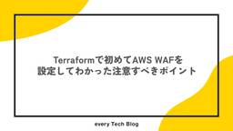
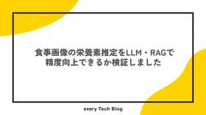

every Tech Blog
https://tech.every.tv/
株式会社エブリーのTech Blogです。
フィード
MLflow Tracing時に並行処理するとTracingが分かれる問題への対処法 1
1
every Tech Blog
はじめに こんにちは。デリッシュキッチンでデータサイエンティストをしている古濵です。 今回はニッチな内容ですが、タイトル通りの問題が発生したため、その対処法について備忘録的にまとめます。 動作環境は以下になります。 Databricks Runtime: 15.4LTS for ML Python: 3.11.11 ライブラリはDatabricks Runtimeのバージョンから以下にアップグレードしています openai==1.65.2 mlflow==2.20.3 pydantic==2.10.6 databricks-agents==0.16.0 databricks-sdk==0.50…
1日前

Terraformで初めてAWS WAFを設定してわかった注意すべきポイント
every Tech Blog
はじめに こんにちは、リテールハブ開発部でバックエンドエンジニアをしているホシと言います。 現在、小売アプリの開発でLaravel11を利用してサービス開発を行っています。 今回はサービス提供をする上でセキュリティ対策としてAWSのWAFを導入することになったお話をしようと思います。 AWS WAF（Web Application Firewall）は、Webアプリケーションを守るための強力なサービスです。 今回、私は初めてTerraformを使ってWAFを設定し、ALBやCloudFrontと連携させました。 まずはChatGPT、Cursorなどを活用して、設定やTerraformコードの…
2日前

食事画像の栄養素推定をLLM・RAGで精度向上できるか検証しました
every Tech Blog
はじめに こんにちは、デリッシュキッチン開発部でソフトウェアエンジニアをしている新谷です。 エブリーの開発部では、日常業務から離れて新しい技術やアイデアに挑戦する「挑戦week」という取り組みを定期的に開催しています。 今回は限定的に2日間という短期間での開催でしたが、この挑戦weekを活用し、ヘルシカの画像解析機能の精度をさらに高めることを目指して、技術検証として性質の異なる2つのAIアプローチを構築・比較しましたので、その内容についてご紹介します。 ※ 挑戦weekの詳細については過去の記事で紹介していますので、興味のある方は以下をご覧ください。 tech.every.tv 比較する2つの…
4日前

Android で機械学習機能を実装してみる
every Tech Blog
はじめに こんにちは、デリッシュキッチンでクライアントエンジニアを担当している kikuchi です。 近年 AI 技術の発展が著しく、中でも生成 AI がかなりの勢いで発展し、普段使いや仕事で ChatGPT などの生成 AI のサービスを取り入れる方や企業が多くなってきました。 今回は多くの場合で生成 AI の機能を実現している機械学習 (ML : Machine Learning) について、Android アプリで簡単に実装する方法に触れてみたいと思います。 なお、弊社は開発生産性の向上などを目的として Cursor を導入するなど、積極的な AI の活用を取り入れていますので、ご興味…
9日前
Amazon Q in QuickSightで計算フィールドを作成してみる
every Tech Blog
はじめに こんにちは、開発部でデータサイエンティストをしている蜜澤です。 ついに東京リージョンでAmazon Q in QuickSightがGAしました！ データストーリー、シナリオ、トピックなど自然言語でデータ分析を行う機能が追加されましたが、このあたりの機能の解説は以前の弊社のブログや、他の方が記事にされているので、そちらをご覧いただければと思います。 今回はAmazon Q in QuickSightを計算フィールドを作成する際に使用することで、ビジュアル作成をより効率化させられないかの検証をしたいと思います。 使用する模擬データ 検証には以下のような、レシピ動画サイトの特定のレシピの…
10日前
Goで実装するUnicode文字数カウントが実はわりと難しい的な話
every Tech Blog
開発2部の内原です。文字コードの話は大好物です。 一般的に、アプリケーションの開発において文字数カウントは非常に身近な機能です。パラメータ取得時やフォーム入力時など、様々な場面で文字数計算を実装する機会があります。 しかし、Unicode文字、特に絵文字や結合文字などが混在するテキスト処理において、「正しい文字数カウント」は意外に複雑な問題です。 この記事では、Go言語でのUnicode文字数カウントに焦点を当てて、実装時に注意すべき点を述べます。 文字数カウントの罠 まず、以下のコードについて考えます。 package main import ( "fmt" "unicode/utf8" )…
11日前
日本CTO協会 新卒合同研修2025 に参加しました！（後編）
every Tech Blog
はじめに 前半の記事では、新卒合同研修の第1回から第3回までの内容をご紹介しました。 前半の記事もぜひご覧ください！ tech.every.tv 後半となる本記事では、第4回から第6回の講義についてお伝えします！ 後半の研修は、より実践的な内容が盛りだくさんでした。実際にサーバーを解体してハードウェアの仕組みを学んだり、ISUCON形式でパフォーマンスチューニングに挑戦したり、最新の生成AI技術について学んだりと、エンジニアとして知っておきたい幅広い知識を身につけることができました。 それでは、各回の内容を見ていきましょう！ 6/4開催 4回目 サーバー解体研修 こんにちは、開発1部 デリッシ…
13日前
日本CTO協会 新卒合同研修2025 に参加しました！（前編）
every Tech Blog
はじめに こんにちは、株式会社エブリーの2025年新卒エンジニアです。 私たちは、2025年5月から6月にかけて開催された日本CTO協会主催の新卒合同研修に参加しました。本記事では、研修の概要や各回の講義内容、そして実際に参加して得られた学びや気づきについてご紹介します。 2024年の新卒合同研修参加レポートも是非ご覧ください！ tech.every.tv 新卒合同研修とは 日本CTO協会が主催する新卒合同研修は、会社の枠を超えて新卒エンジニアが業界全体で成長できる場をつくることを目指しています。背景には、エンジニア不足や、スタートアップ・中小企業にとって新卒育成のコストが大きいといった、業界…
13日前
WAF でセキュリティを強化してチームの QOL を向上させる
every Tech Blog
先日、トモニテで WAF (Web Application Firewall) を導入しました。WAF の導入により、これまで以上に安心感を持ってサービス運用に向き合えるようになったと感じています。 本記事では、WAF 導入の背景から、実際に調査・検討した内容、そして導入後の運用についてまとめていきます。
16日前
Cursor × iOS開発 私はこうやってます
every Tech Blog
Cursor✖️iOS開発 私はこうやってます はじめに こんにちは。開発部でiOSエンジニアをしている野口です。 皆さんAI開発においてエディターは何を使っていますか？ 弊社ではCursorがエンジニア、PdM全員に配布されています。 iOS開発においてはXcodeを使用しますが、XcodeのAI対応が遅いです。（Xcode26のベータ版を試しましたが、個人的にはCursorには遠く及ばない感じだったのでしばらくはCursorにお世話になるかなと思っています。） iOSでもAI開発を進めるべく、以下の記事に影響を受けて、私のCursor × iOS開発方法を紹介します。 基本的な環境構築 ま…
16日前
AI活用で気軽に勉強会を実施した話
every Tech Blog
はじめに デリッシュキッチンでiOSアプリ開発を担当している池田です。近年のAI技術の進歩により、コーディングやデータ分析をはじめとする様々な業務での活用が進んでいます。今回、非エンジニアを含むチーム全体での勉強会において、AIを活用してレジュメを作成することで、効果的な学習体験を実現できました。 その取り組みと成果を共有します。 背景 私たちのチームでは毎週振り返りを行っており、その中で私が「ドメインモデルを意識できていないため、サーバーエンジニアとアプリエンジニア間のコミュニケーションコストが増加している」という課題を提起しました。 ドメインモデルはユビキタス言語の一部です。そのため、エン…
17日前
CodeRabbit VSCode 拡張機能を試してみる
every Tech Blog
はじめに こんにちは。リテールハブ開発部の池です。 昨今、AI を活用したコードレビューの方法は日を追うごとに選択肢が増えているように思います。 GitHub Copilot - GitHub 上の PR に対して レビューコメントを自動生成 Claude Code - /reviewコマンドを使ったローカルレビューや、Claude Code Actions による GitHub 上の PR レビュー Cursor - .cursorrulesファイルでカスタムルールを定義してのローカルレビューや、Cursor BugBot による GitHub 上の PR レビュー このように、各ツールがロ…
18日前
AWS Summit Japan 2025 参加レポート
every Tech Blog
2025年6月25日(水)、26日(木)の2日間に渡り、幕張メッセにて AWS Summit Japan 2025 が開催され、弊社の開発本部からも4名のエンジニアが参加しました。 本参加レポートでは、弊社のエンジニアが参加したセッションの中から、印象に残ったものをご紹介したいと思います。
19日前
運用中のデータレイクアーキテクチャのストレージをS3 Tables へ移行するには
every Tech Blog
七夕🎋の願いごと：[運用中のデータレイクアーキテクチャのストレージをS3 Tables へ移行して]
22日前
Swift 6.2で導入される学習・導入しやすい並行処理(Approachable Concurrency)
every Tech Blog
Swift 6から本格的に導入された Strict Concurrency Checking は、アプリの安定性を飛躍的に向上させる一方、既存のコードの移行や、並行処理を初めて学ぶ開発者にとってはハードルが高いという課題がありました。 この課題に対応するため、Swift 6.2では「Approachable Concurrency」というビジョンが掲げられ、その中核機能として「Default Actor Isolation」が導入されました。 参考資料 この記事はWWDC 2025の以下のセッションを参考にしています。 Swiftの並行処理の活用 Code Along：Swiftの並行処理によ…
25日前
Android Studio Gemini の Agent Mode と rules について
every Tech Blog
ヘルシカ、デリッシュキッチンで Android アプリの開発を担当している岡田です。 時代の流れは早いもので、日々の開発業務で AI のサポートを受けることが当たり前になってきましたね。 今回は Android Studio Narwhal Feature Drop Canary 4 以降に Android Studio Gemini の Agent Mode がついに追加されましたので、 Gemini の rules 設定と合わせて見ていきたいと思います。 この記事が、皆さんの開発体験を向上させる一助となれば幸いです。 Agent Mode とは 機能単位での実装 高度なリファクタリング 複…
1ヶ月前
エンジニアリングにおける生成AI活用の現在地
every Tech Blog
タイトル 株式会社エブリーでCTOを務めている今井(@imakei)です。 今回は、弊社で2ヶ月前に導入したCursorの成果についてお話しします。 結論から言うと、Pull Request数が2倍に増加するという、予想を上回る成果が出ています。 Cursorの導入とその背景 弊社エブリーは「明るい変化の積み重なる暮らしを、誰にでも」をパーパスに掲げ、レシピ動画メディア「デリッシュキッチン」などのサービスを展開しています。AIファーストカンパニーとして、プロダクトでのAI活用はもちろん、開発現場でもAIの実用的な活用を進めています。 その中で、下記のような価値実現を目指し、Cursorを導入し…
1ヶ月前
PHPカンファレンス2025 最速参加レポート
every Tech Blog
去年に引き続き、エブリーは2025年6月28日（土）に大田区産業プラザPiOで開催されたPHPカンファレンス2025に参加させていただきました。 今回も参加レポートとして、会場の様子やセッションの感想についてお届けします！ イベント概要 https://phpcon.php.gr.jp/2025/ PHPカンファレンスは、PHP関連の技術を主とした技術者カンファレンスです。 2000年に日本のユーザ会によってPHPカンファレンスが初めて行われ、今年で26回目の開催となります。 これからPHPをはじめる方から、さらにPHPを極めていきたい方まで幅広く楽しめるイベントになるよう様々なプログラムをご…
1ヶ月前
AWSを活用したスケーラブルなログ収集基盤の構築
every Tech Blog
はじめに こんにちは。 開発本部 開発1部 デリッシュリサーチチームでデータエンジニアをしている吉田です。 エブリーではサイネージ端末を利用した広告配信サービスを提供しており、サイネージ端末からのログを収集しています。 従来はTreasureData-SDKを利用して端末からTreasureData上のテーブルにログを送信していましたが、ログ収集基盤を移行することになりました。 今回、AWSのマネージドサービスを活用して、スケーラブルなログ収集基盤を構築したので、その内容を紹介します。 背景 従来のログ収集基盤では、TreasureData-SDKを利用して端末からTreasureData上の…
1ヶ月前
LaravelでJSON形式のログを出力してfluentbit経由でS3にアップロードしてみた
every Tech Blog
はじめに こんにちは、エブリーでサーバーサイドをメインに担当している清水です。 私のチームではPHP, Laravelを使用して小売店向けのSaaS型Webサービスの開発を行っています。インフラはAmazon ECS (Fargate)です。 このシステムではユーザーのアクションを分析するためのイベントログを出力する機能があり、こちらをAmazon S3に出力するためにfluentbitを使用することにしました。 当初の予定では1日程度で終わるはず思っていたのですが、思った以上にうまくいかず1週間ほどかかってしまいました。 本記事では、Laravel → 標準出力 → Fluent Bit →…
1ヶ月前
PHP Conference Japan 2025 にGOLDスポンサーとして今年も協賛します！
every Tech Blog
PHP Conference Japan 2025 にGOLDスポンサーとして今年も協賛します！
1ヶ月前
OpenAPI における null 値の表現の仕方
every Tech Blog
こんにちは、@きょーです！普段はデリッシュキッチン開発部のバックエンド中心で業務をしています。 はじめに OpenAPI で API 仕様書を書く際、null 値を許容するプロパティの表現方法はバージョンによって異なります。たとえば、ユーザープロフィールのメールアドレスのように「値が存在しない（null）」を許容したいケースはよくありますが、その書き方や推奨される方法は OpenAPI のバージョンごとに変化してきました。 この記事では、OpenAPI 3.0.0 と 3.1.0 それぞれでの null 許容プロパティの書き方や、その背景、なぜ仕様が変わったのか、どちらを使うべきかについて解説…
1ヶ月前
MySQL のテーブル構成を Liam ERD で可視化してみた
every Tech Blog
目次 はじめに Liam ERD とは 主な特徴 サポート状況 導入 手順 1. Liam ERD のビルドをさせるための Dockerfile を用意する 2. Docker Compose ファイルを用意する 3. テーブル構成を出力するためのコマンドを用意する 4. テーブル構成を出力する 使い勝手 まとめ 最後に はじめに こんにちは、開発本部開発1部トモニテグループのエンジニアの rymiyamoto です。 プロダクトを開発していると、DB のテーブルは常に変化していきます。 そのため、テーブルの構成を可視化することで、テーブルの関係性を把握することができるので設計や開発の効率化に…
1ヶ月前
Dev Containerを使ってみる
every Tech Blog
はじめに エブリーでデリッシュキッチンの開発をしている本丸です。 4月に新卒の開発研修を行ったのですが、配属されたチームが異なることなどもあり開発環境が揃っていないという問題がありました。 anyenvやgoenvなどを設定してもらうという手もあったのですが、それ自体の設定にも手間がかかってしまうためDev Containerの設定を用意してその場は乗り切りました。 本記事では、Dev Containerの基本的な使い方から、Docker Composeとの連携、拡張機能の設定まで、実際の開発現場で役立つ知識をお届けできればと思っています。 Dev Containerとは Dev Contai…
2ヶ月前
クロスクラウド環境で AWS SSM を利用して SSH の開放範囲を絞る
every Tech Blog
エブリーで小売業界向き合いの開発を行っている @kosukeohmura です。 エブリーでは全社的に SSH を使ったサーバーへのログインから、AWS Systems Manager Session Manager ( 以下 Session Manager ) を使った運用に切り替えました。 tech.every.tv これは私達のチームで管理している他社クラウド (AWS 以外という意味で他社です) 上に存在するサーバについても対象ですが、Session Manager を直接利用することはできません。そこで Session Manager を使った SSH 踏み台サーバーを構築し、それ経…
2ヶ月前
人工知能学会(JSAI2025)に参加しました
every Tech Blog
はじめに こんにちは。デリッシュキッチンでデータサイエンティストをしている古濵です。 2025年5月27日〜30日に開催された第39回人工知能学会全国大会(JSAI2025)に、プラチナスポンサーとして協賛いたしました。 今年は史上最多の参加者数を更新したようで、学会としての盛り上がりを肌で感じることができました。 tech.every.tv エブリーとしても人工知能学会への参加は今回が初めてでした。 本記事では、スポンサーブースでのエブリーのAIプロダクト開発に関する紹介や、聴講した講演等についてまとめていきたいと思います。 スポンサーブース 弊社のスポンサーブースでは「AIエージェントによ…
2ヶ月前
トモニテで発生した SQL インジェクション攻撃の記録と教訓
every Tech Blog
はじめに こんにちは、トモニテで開発を担当している吉田です。 サービスを運営する上で、セキュリティ対策は欠かせません。 本記事では、実際にトモニテが受けた攻撃の事例をもとに、 異常検知から調査の経緯、攻撃の詳細、そして発見された問題点や今後の対応についてまとめています。 セキュリティリスク 現代の Web サービスにおいて、セキュリティリスクは多岐にわたります。代表的なものとしては、クロスサイトスクリプティング（XSS）、クロスサイトリクエストフォージェリ（CSRF）、ブルートフォース攻撃などが挙げられます。これらのリスクは、サービスの信頼性やユーザーの安全を脅かす重大な問題となり得ます。 中…
2ヶ月前
Laravel開発で注意したい Eloquentの落とし穴と正しい使い方
every Tech Blog
はじめに こんにちは、リテールハブ開発部でバックエンドエンジニアをしているホシと言います。 現在、小売アプリの開発でLaravel11を利用してAPI開発を行っています。 今回はとても便利で、開発効率を大きく上げてくれるツール「LaravelのEloquent ORM」についてお話できればと思います。 ただ、Eloquentに限った話ではなくORM全体の話でもあるのですが、使い方を間違えるとパフォーマンス低下や予期しないバグを引き起こすこともあります。 実際に使用してみて、便利さの裏にある注意点や、SQLの知識・理解が非常に重要であることを実感したので、今回はその点についてお話しできればと思い…
2ヶ月前
TSKaigi 2025 に参加してきました！
every Tech Blog
2025年5月23日(金)、24日(土)の2日間に渡って開催されたTSKaigi 2025に参加してきましたので、イベントの様子や印象に残ったセッションをいくつかご紹介します。
2ヶ月前